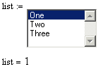
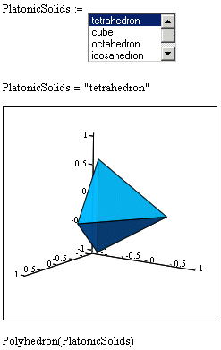
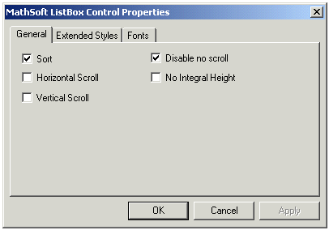

Mathsoft ListBox Control |
| Overview |
The Mathsoft ListBox control allows you to accept user input as a selection from a list. The default output is the number of the item selected in the list, but it can be converted to the selected label, or other data type in the script using the ListBox class. You can change the appearance of a list box using the Properties dialog box or access its properties through the script. Descriptions and code examples for all properties are given in the Help pages that follow.
| Simple Annotated Example |
Here's an example that shows the default script and the resulting behavior of the ListBox control in the worksheet.
Rem Initialize List Box
ListBox.ResetContent()
Rem Add Strings here as needed
ListBox.AddString("One")
ListBox.AddString("Two")
ListBox.AddString("Three")
Rem Initialize Selection If desired
ListBox.CurSel = 0
Sub ListBoxEvent_Start()
Rem TODO: Add your code here
End Sub
Sub ListBoxEvent_Exec(Inputs,Outputs)
Outputs(0).Value = ListBox.CurSel + 1
End Sub
Sub ListBoxEvent_Stop()
Rem TODO: Add your code here
End Sub
Sub ListBox_SelChanged()
ListBox.Recalculate()
End Sub
Sub ListBox_DblClick()
ListBox.Recalculate()
End Sub

In the script, notice that there are five events, Start, Exec, Stop, SelChanged, and DblClick. However, the list box is initialized and populated outside these events so that the control calculates and sends output to the worksheet whether the user has actively selected a list box item or not. If you wish to effect changes in the contents of the list based on other events in the worksheet, you have to move this code inside the Start event.
In general, the Start event may be used to further modify or manipulate the appearance of the list box or the elements within it. Alternatively, procedures for formatting the list box can be done using the Properties dialog box, including font formatting, which may only be done through the Properties dialog. The Exec event is where inputs and outputs can be processed, including converting the selection from the default integer output to other numerical or string output. The SelChanged and DblClick events are generally used to re-execute the control after the user has changed their selection, though these events might fire other actions, such as alerts or script-based calculations. Here's a slightly modified piece of script and a picture showing its effect on the appearance and behavior of the control:
Rem Initialize List Box
ListBox.ResetContent()
Rem Add Strings here as needed
ListBox.AddString("tetrahedron")
ListBox.AddString("cube")
ListBox.AddString("octahedron")
ListBox.AddString("icosahedron")
ListBox.AddString("dodecahedron")
Rem Initialize Selection If desired
ListBox.CurSel = 0
Sub ListBoxEvent_Start()
Rem TODO: Add your code here
End Sub
Sub ListBoxEvent_Exec(Inputs,Outputs)
Outputs(0).Value = ListBox.GetText(CurSel)
End Sub
Sub ListBoxEvent_Stop()
Rem TODO: Add your code here
End Sub
Sub ListBox_SelChanged()
ListBox.Recalculate()
End Sub
Sub ListBox_DblClick()
ListBox.Recalculate()
End Sub

In this script, the items in the list box have been modified and the output has been converted to a string using the GetText method supported by the ListBox control.
If you would like to change the appearance of a list box without using the script, you can use the Properties Dialog box by right-clicking on the control and selecting Mathsoft ListBox Control Object > Properties from the menu. You see:

Note that you can only change font settings for the ListBox control using the Properties dialog box. Font-related properties are not available through the script.